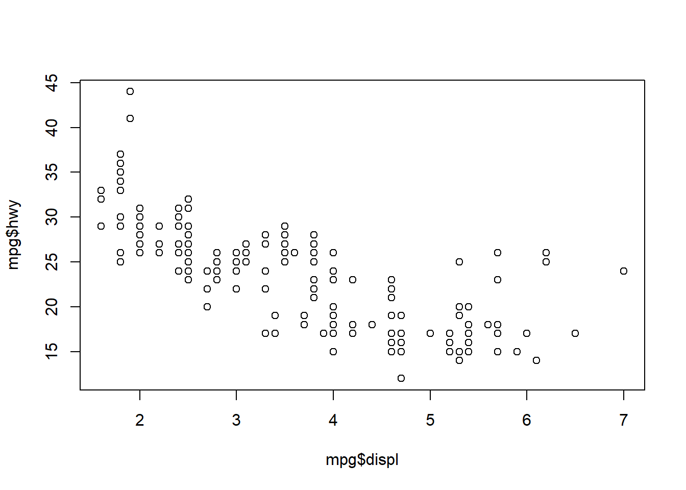

2 Nuevo proyecto
Recuerda, trabajaremos en un script de R, no en la Consola. Además lo haremos de forma segura y organizada creando un RStudio Project:
- Ir a File > New Project…
- Podemos crear un nuevo directorio donde guardar nuestros scripts, figuras, datos, etc.;
- Por ejemplo, en el Escritorio creamos el proyecto “intro_R”;
- Siempre que trabajemos en este proyecto, “intro_R” será nuestro Working Directory
- Ahora, creamos un nuevo script “plots_mpg.R” y a programar!
2.1 Paquetes
Necesitamos cargar el paquete tidyverse:
## ── Attaching core tidyverse packages ──────────────────────── tidyverse 2.0.0 ──
## ✔ dplyr 1.1.2 ✔ readr 2.1.4
## ✔ forcats 1.0.0 ✔ stringr 1.5.0
## ✔ ggplot2 3.4.2 ✔ tibble 3.2.1
## ✔ lubridate 1.9.2 ✔ tidyr 1.3.0
## ✔ purrr 1.0.1
## ── Conflicts ────────────────────────────────────────── tidyverse_conflicts() ──
## ✖ dplyr::filter() masks stats::filter()
## ✖ dplyr::lag() masks stats::lag()
## ℹ Use the conflicted package (<http://conflicted.r-lib.org/>) to force all conflicts to become errorsNotamos que este comando carga a su vez una serie de paquetes, no solo uno. Los conflictos son importantes a tener en cuenta porque indican que dos paquetes diferentes comparten el mismo nombre para una función. Por ejemplo, la función select está repetida tanto en el paquete dplyr como en el paquete MASS. Si cargamos ambos paquetes en nuestro script, entonces para evitar conflictos debemos especificar dplyr::select(...) o MASS::select(...).
2.2 Datos
Vamos a trabajar con los data frames mpg:
## # A tibble: 234 × 11
## manufacturer model displ year cyl trans drv cty hwy fl class
## <chr> <chr> <dbl> <int> <int> <chr> <chr> <int> <int> <chr> <chr>
## 1 audi a4 1.8 1999 4 auto… f 18 29 p comp…
## 2 audi a4 1.8 1999 4 manu… f 21 29 p comp…
## 3 audi a4 2 2008 4 manu… f 20 31 p comp…
## 4 audi a4 2 2008 4 auto… f 21 30 p comp…
## 5 audi a4 2.8 1999 6 auto… f 16 26 p comp…
## 6 audi a4 2.8 1999 6 manu… f 18 26 p comp…
## 7 audi a4 3.1 2008 6 auto… f 18 27 p comp…
## 8 audi a4 quattro 1.8 1999 4 manu… 4 18 26 p comp…
## 9 audi a4 quattro 1.8 1999 4 auto… 4 16 25 p comp…
## 10 audi a4 quattro 2 2008 4 manu… 4 20 28 p comp…
## # ℹ 224 more rowsy diamonds de ggplot2:
## # A tibble: 10 × 10
## carat cut color clarity depth table price x y z
## <dbl> <ord> <ord> <ord> <dbl> <dbl> <int> <dbl> <dbl> <dbl>
## 1 0.23 Ideal E SI2 61.5 55 326 3.95 3.98 2.43
## 2 0.21 Premium E SI1 59.8 61 326 3.89 3.84 2.31
## 3 0.23 Good E VS1 56.9 65 327 4.05 4.07 2.31
## 4 0.29 Premium I VS2 62.4 58 334 4.2 4.23 2.63
## 5 0.31 Good J SI2 63.3 58 335 4.34 4.35 2.75
## 6 0.24 Very Good J VVS2 62.8 57 336 3.94 3.96 2.48
## 7 0.24 Very Good I VVS1 62.3 57 336 3.95 3.98 2.47
## 8 0.26 Very Good H SI1 61.9 55 337 4.07 4.11 2.53
## 9 0.22 Fair E VS2 65.1 61 337 3.87 3.78 2.49
## 10 0.23 Very Good H VS1 59.4 61 338 4 4.05 2.39Un data frame es una colección rectangular de datos donde las variables están organizadas por columnas y las observaciones por filas. Si ejecutamos ?mpg (o ?diamonds) el panel de Ayuda brinda una descripción de los datos.
2.3 Visualización con R base
Nos vamos a concentrar en las variables displ y hwy:

Esto es un diagrama de dispersión. Si hacemos ?plot vemos las características que podemos variar. Por ejemplo:
plot(mpg$displ, mpg$hwy,
main = "Consumo de combustible",
xlab = "Cilindrada (litros)",
ylab = "Consumo (millas por galón)",
pch = 5,
col = "red")
2.4 Visualización con ggplot2
El modelo básico para crear un ggplot tiene la forma:
Así que para emular el gráfico previo hacemos:

‚Ķ más sobre ggplot el 21/10 con Pablo Morala üòâ
2.4.1 Ejercicios
- Hacer el diagrama de dispersión de
hwyvs. cyl¿qué crees del gráfico obtenido? - ¿Qué pasa si hacemos el diagrama de
classvs. drv? ¿por qué crees que hay menos puntos? - Exploremos los gráficos que podemos hacer con
R base: r-graph-gallery.com/base-R